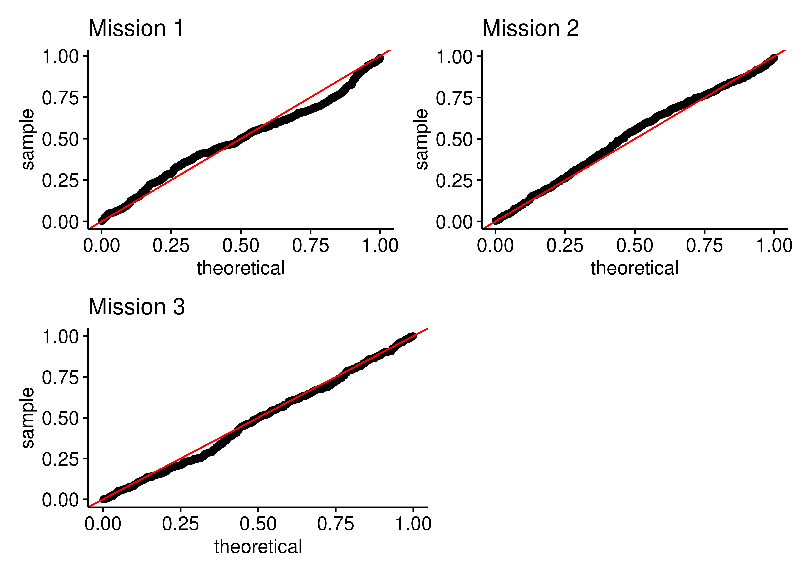
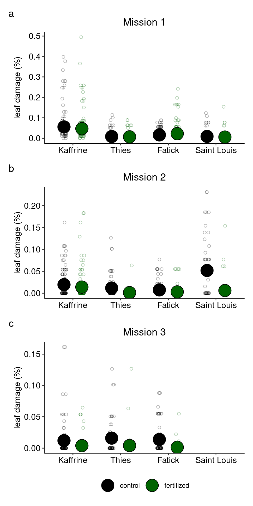

2021 Locust Damage Analysis
Density patterns by treatment and region
NoteExploratory Work
This page contains exploratory analysis conducted during the development of the manuscript. These analyses informed our statistical approach and data management decisions. Not all content here appears in the final manuscript. For the final methods and results, see the Methods and Results page.
Summary
The goal of this page is to analyze locust damage patterns across fertilizer treatments and regions. This analysis replicates key figures from the manuscript to ensure consistent theming and validates our data management approach. If you see errors, please let me know!
Locust density and region by treatment
To assess how locust damage percent changes between treatment (fertilized and control) and region (four regions), I built a generalized linear mixed model (family: Poisson) per mission as follows:
add formula here
Below are the diagnostic plots for these models:
The tweedie models look like they capture the overdispersion quite well. There is a lot of zeros in this data.
OSE damage by treatment and region

# A tibble: 22 × 10
mission_numer fertilizer_treatment region response SE df asymp.LCL
<chr> <fct> <fct> <dbl> <dbl> <dbl> <dbl>
1 1 control Fatick 0.0161 0.00328 Inf 0.0108
2 1 fertilized Fatick 0.0224 0.00417 Inf 0.0156
3 1 control Kaffrine 0.0554 0.00823 Inf 0.0414
4 1 fertilized Kaffrine 0.0470 0.00707 Inf 0.0350
5 1 control Saint Lo… 0.00890 0.00271 Inf 0.00490
6 1 fertilized Saint Lo… 0.00565 0.00191 Inf 0.00291
7 1 control Thies 0.00831 0.00231 Inf 0.00482
8 1 fertilized Thies 0.00679 0.00199 Inf 0.00382
9 2 control Fatick 0.00744 0.00244 Inf 0.00391
10 2 fertilized Fatick 0.00291 0.00126 Inf 0.00124
# ℹ 12 more rows
# ℹ 3 more variables: asymp.UCL <dbl>, mission <int>, source <chr>OSE damage by teatment and region model summaries (tabulated)
Here are the model summaries and pairwise comparisons. This will be across missions, but please keep in mind each mission had it’s own model. So we cant make across-mission comparions just yet.
| OSE density by treatment and region by mission | |||||
| Effect | Term | Estimate | Std. Error | Statistic | P-value |
|---|---|---|---|---|---|
| 1 | |||||
| fixed | (Intercept) | −4.130 | 0.204 | −20.241 | 0.000 |
| fixed | fertilized | 0.332 | 0.190 | 1.749 | 0.080 |
| fixed | Kaffrine | 1.237 | 0.247 | 4.997 | 0.000 |
| fixed | Saint Louis | −0.592 | 0.352 | −1.680 | 0.093 |
| fixed | Thies | −0.661 | 0.332 | −1.989 | 0.047 |
| fixed | fertilized:Kaffrine | −0.497 | 0.224 | −2.218 | 0.027 |
| fixed | fertilized:Saint Louis | −0.786 | 0.388 | −2.026 | 0.043 |
| fixed | fertilized:Thies | −0.535 | 0.359 | −1.491 | 0.136 |
| random | farmer | 1.009 | NA | NA | NA |
| 2 | |||||
| fixed | (Intercept) | −4.900 | 0.328 | −14.926 | 0.000 |
| fixed | fertilized | −0.941 | 0.501 | −1.879 | 0.060 |
| fixed | Kaffrine | 0.960 | 0.374 | 2.566 | 0.010 |
| fixed | Saint Louis | 1.940 | 0.379 | 5.116 | 0.000 |
| fixed | Thies | 0.453 | 0.439 | 1.032 | 0.302 |
| fixed | fertilized:Kaffrine | 0.606 | 0.571 | 1.062 | 0.288 |
| fixed | fertilized:Saint Louis | −1.212 | 0.665 | −1.822 | 0.068 |
| fixed | fertilized:Thies | −1.329 | 0.888 | −1.496 | 0.135 |
| random | farmer | 0.791 | NA | NA | NA |
| 3 | |||||
| fixed | (Intercept) | −4.282 | 0.296 | −14.458 | 0.000 |
| fixed | fertilized | −2.384 | 0.705 | −3.382 | 0.001 |
| fixed | Kaffrine | −0.145 | 0.415 | −0.350 | 0.727 |
| fixed | Thies | 0.144 | 0.443 | 0.326 | 0.745 |
| fixed | fertilized:Kaffrine | 1.280 | 0.867 | 1.475 | 0.140 |
| fixed | fertilized:Thies | 1.032 | 0.929 | 1.111 | 0.266 |
| random | farmer | 0.000 | NA | NA | NA |
Here are the pairwise comparisons between region and treatment by mission number. Fair warning, its a large table since there are a lot of regions.
| OSE density model pairwise comparisons by mission | ||||||
| contrast | ratio | SE | df | null | z.ratio | p.value |
|---|---|---|---|---|---|---|
| 1 | ||||||
| control Fatick / control Kaffrine | 0.290 | 0.072 | Inf | 1 | −4.997 | 0.000 |
| control Fatick / control Saint Louis | 1.808 | 0.637 | Inf | 1 | 1.680 | 0.700 |
| control Fatick / control Thies | 1.936 | 0.643 | Inf | 1 | 1.989 | 0.489 |
| control Fatick / fertilized Fatick | 0.717 | 0.136 | Inf | 1 | −1.749 | 0.655 |
| control Fatick / fertilized Kaffrine | 0.342 | 0.085 | Inf | 1 | −4.324 | 0.000 |
| control Fatick / fertilized Saint Louis | 2.846 | 1.088 | Inf | 1 | 2.735 | 0.112 |
| control Fatick / fertilized Thies | 2.370 | 0.818 | Inf | 1 | 2.499 | 0.195 |
| control Kaffrine / control Saint Louis | 6.227 | 2.064 | Inf | 1 | 5.517 | 0.000 |
| control Kaffrine / control Thies | 6.668 | 2.057 | Inf | 1 | 6.150 | 0.000 |
| control Kaffrine / fertilized Kaffrine | 1.179 | 0.140 | Inf | 1 | 1.386 | 0.864 |
| control Kaffrine / fertilized Saint Louis | 9.803 | 3.559 | Inf | 1 | 6.287 | 0.000 |
| control Kaffrine / fertilized Thies | 8.163 | 2.634 | Inf | 1 | 6.508 | 0.000 |
| control Saint Louis / control Thies | 1.071 | 0.419 | Inf | 1 | 0.175 | 1.000 |
| control Saint Louis / fertilized Saint Louis | 1.574 | 0.533 | Inf | 1 | 1.341 | 0.883 |
| control Saint Louis / fertilized Thies | 1.311 | 0.527 | Inf | 1 | 0.673 | 0.998 |
| control Thies / fertilized Thies | 1.224 | 0.372 | Inf | 1 | 0.665 | 0.998 |
| fertilized Fatick / control Kaffrine | 0.405 | 0.094 | Inf | 1 | −3.888 | 0.003 |
| fertilized Fatick / control Saint Louis | 2.520 | 0.860 | Inf | 1 | 2.709 | 0.120 |
| fertilized Fatick / control Thies | 2.699 | 0.865 | Inf | 1 | 3.098 | 0.041 |
| fertilized Fatick / fertilized Kaffrine | 0.477 | 0.111 | Inf | 1 | −3.174 | 0.032 |
| fertilized Fatick / fertilized Saint Louis | 3.968 | 1.477 | Inf | 1 | 3.704 | 0.005 |
| fertilized Fatick / fertilized Thies | 3.304 | 1.104 | Inf | 1 | 3.578 | 0.008 |
| fertilized Kaffrine / control Saint Louis | 5.282 | 1.751 | Inf | 1 | 5.023 | 0.000 |
| fertilized Kaffrine / control Thies | 5.657 | 1.746 | Inf | 1 | 5.615 | 0.000 |
| fertilized Kaffrine / fertilized Saint Louis | 8.316 | 3.019 | Inf | 1 | 5.835 | 0.000 |
| fertilized Kaffrine / fertilized Thies | 6.925 | 2.235 | Inf | 1 | 5.997 | 0.000 |
| fertilized Saint Louis / control Thies | 0.680 | 0.285 | Inf | 1 | −0.921 | 0.984 |
| fertilized Saint Louis / fertilized Thies | 0.833 | 0.357 | Inf | 1 | −0.427 | 1.000 |
| 2 | ||||||
| control Fatick / control Kaffrine | 0.383 | 0.143 | Inf | 1 | −2.566 | 0.169 |
| control Fatick / control Saint Louis | 0.144 | 0.054 | Inf | 1 | −5.116 | 0.000 |
| control Fatick / control Thies | 0.636 | 0.279 | Inf | 1 | −1.032 | 0.970 |
| control Fatick / fertilized Fatick | 2.562 | 1.282 | Inf | 1 | 1.879 | 0.565 |
| control Fatick / fertilized Kaffrine | 0.535 | 0.206 | Inf | 1 | −1.623 | 0.736 |
| control Fatick / fertilized Saint Louis | 1.237 | 0.645 | Inf | 1 | 0.408 | 1.000 |
| control Fatick / fertilized Thies | 6.150 | 4.665 | Inf | 1 | 2.395 | 0.244 |
| control Kaffrine / control Saint Louis | 0.375 | 0.114 | Inf | 1 | −3.229 | 0.027 |
| control Kaffrine / control Thies | 1.660 | 0.622 | Inf | 1 | 1.351 | 0.879 |
| control Kaffrine / fertilized Kaffrine | 1.397 | 0.384 | Inf | 1 | 1.215 | 0.928 |
| control Kaffrine / fertilized Saint Louis | 3.230 | 1.512 | Inf | 1 | 2.504 | 0.194 |
| control Kaffrine / fertilized Thies | 16.060 | 11.612 | Inf | 1 | 3.840 | 0.003 |
| control Saint Louis / control Thies | 4.422 | 1.688 | Inf | 1 | 3.894 | 0.002 |
| control Saint Louis / fertilized Saint Louis | 8.606 | 3.774 | Inf | 1 | 4.908 | 0.000 |
| control Saint Louis / fertilized Thies | 42.790 | 31.127 | Inf | 1 | 5.164 | 0.000 |
| control Thies / fertilized Thies | 9.677 | 7.101 | Inf | 1 | 3.093 | 0.042 |
| fertilized Fatick / control Kaffrine | 0.149 | 0.070 | Inf | 1 | −4.051 | 0.001 |
| fertilized Fatick / control Saint Louis | 0.056 | 0.027 | Inf | 1 | −6.083 | 0.000 |
| fertilized Fatick / control Thies | 0.248 | 0.130 | Inf | 1 | −2.669 | 0.132 |
| fertilized Fatick / fertilized Kaffrine | 0.209 | 0.100 | Inf | 1 | −3.277 | 0.023 |
| fertilized Fatick / fertilized Saint Louis | 0.483 | 0.286 | Inf | 1 | −1.228 | 0.924 |
| fertilized Fatick / fertilized Thies | 2.401 | 1.943 | Inf | 1 | 1.082 | 0.961 |
| fertilized Kaffrine / control Saint Louis | 0.269 | 0.085 | Inf | 1 | −4.130 | 0.001 |
| fertilized Kaffrine / control Thies | 1.188 | 0.458 | Inf | 1 | 0.447 | 1.000 |
| fertilized Kaffrine / fertilized Saint Louis | 2.312 | 1.102 | Inf | 1 | 1.759 | 0.648 |
| fertilized Kaffrine / fertilized Thies | 11.496 | 8.372 | Inf | 1 | 3.353 | 0.018 |
| fertilized Saint Louis / control Thies | 0.514 | 0.268 | Inf | 1 | −1.278 | 0.907 |
| fertilized Saint Louis / fertilized Thies | 4.972 | 4.017 | Inf | 1 | 1.985 | 0.492 |
| 3 | ||||||
| control Fatick / control Kaffrine | 1.156 | 0.480 | Inf | 1 | 0.350 | 0.999 |
| control Fatick / control Thies | 0.866 | 0.384 | Inf | 1 | −0.326 | 1.000 |
| control Fatick / fertilized Fatick | 10.843 | 7.642 | Inf | 1 | 3.382 | 0.009 |
| control Fatick / fertilized Kaffrine | 3.487 | 1.773 | Inf | 1 | 2.456 | 0.137 |
| control Fatick / fertilized Thies | 3.342 | 1.964 | Inf | 1 | 2.054 | 0.312 |
| control Kaffrine / control Thies | 0.749 | 0.329 | Inf | 1 | −0.658 | 0.986 |
| control Kaffrine / fertilized Kaffrine | 3.016 | 1.525 | Inf | 1 | 2.183 | 0.246 |
| control Kaffrine / fertilized Thies | 2.891 | 1.691 | Inf | 1 | 1.814 | 0.456 |
| control Thies / fertilized Thies | 3.861 | 2.337 | Inf | 1 | 2.232 | 0.223 |
| fertilized Fatick / control Kaffrine | 0.107 | 0.075 | Inf | 1 | −3.185 | 0.018 |
| fertilized Fatick / control Thies | 0.080 | 0.057 | Inf | 1 | −3.513 | 0.006 |
| fertilized Fatick / fertilized Kaffrine | 0.322 | 0.245 | Inf | 1 | −1.490 | 0.671 |
| fertilized Fatick / fertilized Thies | 0.308 | 0.252 | Inf | 1 | −1.442 | 0.702 |
| fertilized Kaffrine / control Thies | 0.248 | 0.131 | Inf | 1 | −2.635 | 0.089 |
| fertilized Kaffrine / fertilized Thies | 0.958 | 0.627 | Inf | 1 | −0.065 | 1.000 |
Table: annual OSE damage by region and field type
The data discrepancies seen the the OSE count x ground cover are really shown in this table as well. We can see that the trends are the same (e.g. fertilized plots have less than control), but the actual averages are totally different.
| Mean OSE damage by Region and Fertilizer Treatment | ||||
| Saint Louis | Thies | Fatick | Kaffrine | |
|---|---|---|---|---|
| fertilized | 0.0099 | 0.0060 | 0.0137 | 0.0318 |
| control | 0.0406 | 0.0155 | 0.0157 | 0.0394 |